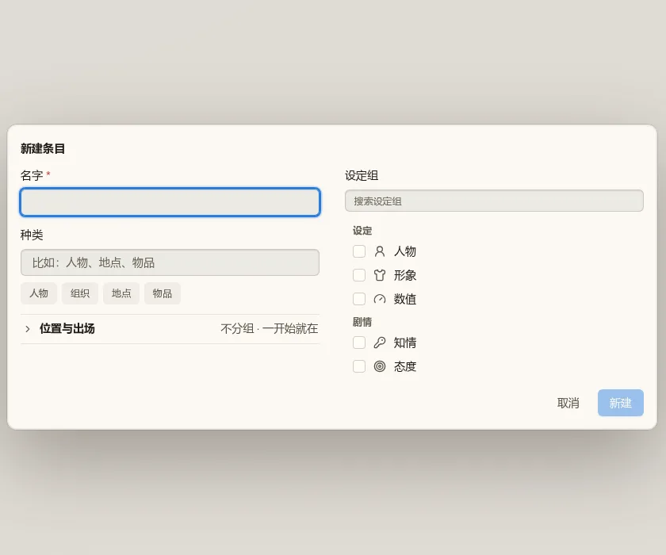
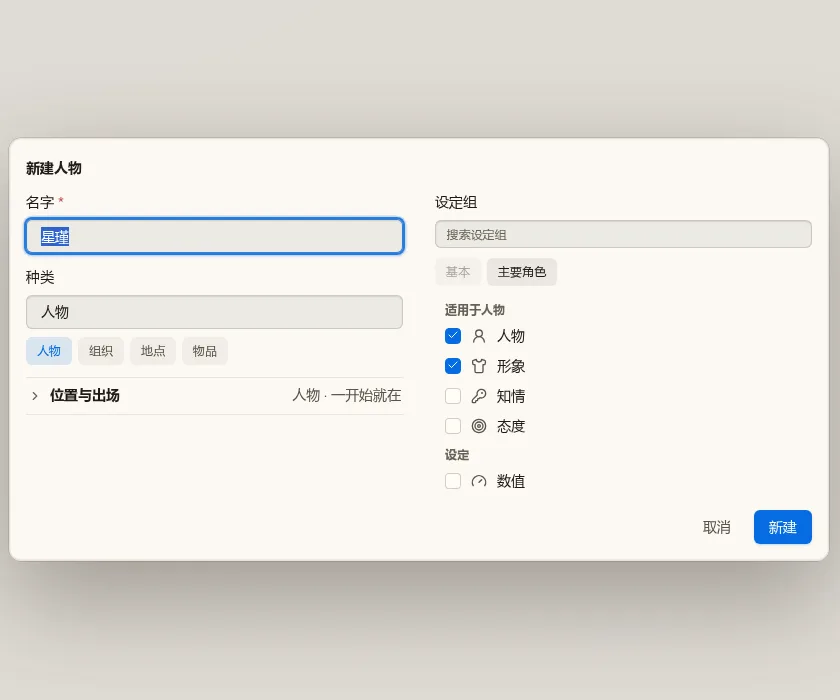
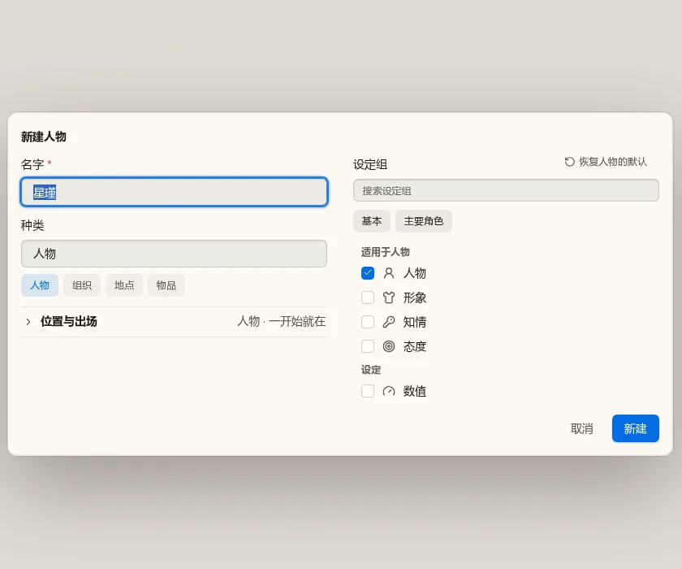
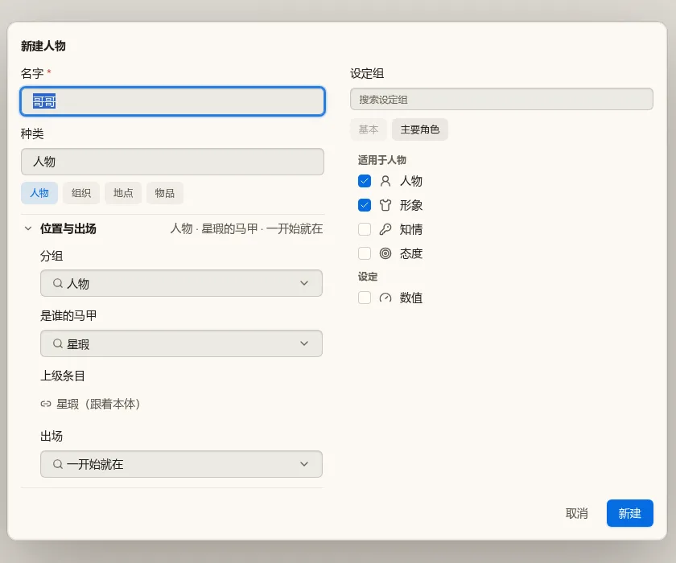

第 2 轮：新建对话框的横版
新建对话框按这个横版做？
推荐同意：左栏是条目本身，右栏的设定组一直展开；点种类时右边的勾选跟着换，因果并排看得见，所以设定组不再收起。“位置与出场”仍收起，段头写出现在的值。




对话框的字段名按下表改？
推荐同意：名词对名词，和设定树、页头的叫法一致。第 1 轮没答，先按这张表做在稿子里。
| 现在 | 改成 |
|---|---|
| 启用哪些数据 | 设定组 |
| 放在谁下面 ／ 最上面一层 | 上级条目 ／ 无 |
| 它是谁的另一个身份 ／ 不是 | 是谁的马甲 ／ 不是马甲 |
| 从哪里出场 | 出场（选项仍是“一开始就在”“第 N 章开头”） |
| 标题“新建条目” | 从“新建人物”打开时写“新建人物” |
按第 1 轮的附言改了，不用答
| 附言 | 改成 |
|---|---|
| 头像的底部和别名那一行对齐 | 头像 88 见方，顶齐名字、底齐别名；放头像时简介单行截断，三行高度固定 |
| 对话框做宽一点，横屏 | 见上面第一题 |
直接修，不用答
| 哪里 | 改成什么 |
|---|---|
| 设定组的预设按钮 | 和现在勾选一致的那个预设（图里的“基本”）看起来像不可用；改成选中的样子 |
| 对话框：种类的候选 | 看得出能点的按钮，选中的用强调色浅底 |
| 对话框：分组、本体、上级、出场 | 能打字搜的下拉 |
| 对话框：动过勾选以后 | 勾选和种类的默认不同时出“恢复某某的默认” |
| 对话框：名字框里按回车 | 直接新建 |
| 在设定树选中的条目或分组上新建 | 上级、分组预先填好 |
| 页头的“添加别名” | 加号与上面的名字左对齐 |
已定
- 页头用两栏：左名字、简介、别名，右种类、出场，“在看”在右栏下端（第 1 轮）
- 人物有立绘时页头放小头像，点了去“形象”分页（第 1 轮）
- 文字分页没有主文字时是一行淡的占位，点了进编辑（第 1 轮）
- 新建对话框：名字、种类在前，其余可展开（第 1 轮；第 2 轮改横版）
- 界面与讨论里叫“设定组”；设定组模板另做（2026-11-27）